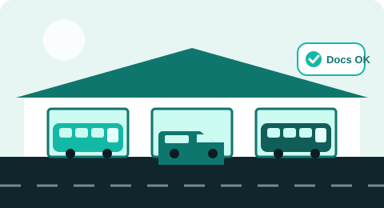

Every employee trip — planned, tracked and verified.
Yaan replaces spreadsheets, phone calls and WhatsApp groups with one platform. Request a trip, assign the right driver and vehicle, notify everyone automatically, confirm every drop-off with an OTP, and see it all in one dashboard.
- No double-booked drivers or vehicles
- OTP-confirmed drop-offs
- Vendor data stays isolated
- Requested by Operator
- Driver & vehicle assigned
- SMS sent · OTPs issued
- Trip in progress
- All drop-offs verified
Running employee transport shouldn't mean running after people.
Most teams stitch it together with sheets, calls and chat groups. Here's what changes.
Without Yaan
- Trips booked over calls and chats
- Same driver promised to two trips
- "Did everyone get home?" — nobody knows
- Expired licences and insurance found too late
- Month-end reports built by hand
With Yaan
- One request form, one clear status
- Conflicts blocked by the system itself
- Every drop-off confirmed by OTP or flagged with a reason
- Document expiry tracked with early warnings
- Live dashboard and Excel reports in a click
From request to reporting in four steps
Click through a trip's life. Each step shows who does what, and what the system does for you.
Pick your role — see what Yaan does for you
No guessing whether everyone got home.
When a trip is assigned, each employee gets a 4-digit OTP by SMS and/or email. At the drop point they tell it to the driver, who enters it. The driver cannot end the trip until every employee is either verified or marked "not dropped" with a reason.
- 5 wrong tries lock that employee's OTP — the driver records a reason instead
- The driver never receives the OTP; only the requesting Operator can see it
- Exceptions are flagged on the trip and the dashboard
Drop-off: Priya S. — ask for her OTP
Try it — this is an interactive demo. Enter a wrong code a few times to see the lock.
One platform, the whole commute
Filter by what matters to you.
Mistakes get blocked before they happen.
Yaan checks capacity, escort-seat needs and driver/vehicle availability every time a trip is assigned — enforced by the database itself, even when two people assign at the same moment.
- 30-minute buffer between trips for the same driver or vehicle
- Seats ≥ passengers, plus one escort seat when any passenger is female
- Trips are never hard-deleted — cancel to release the driver and vehicle
Try the assignment check
See how your transport is really performing
On-time performance, utilization, SMS delivery and cost — filterable by customer, shift and vendor. Illustrative sample data shown.
Trip volume by hour
Driver utilization
How much coordination time could you get back?
A rough, adjustable estimate — change the numbers to match your reality.
For companies and for the vendors who serve them
Companies with staff transport
IT parks, BPOs, manufacturing plants and campuses that move employees across shifts. Request trips, know they're covered and see who reached safely.

Transport vendors & fleet operators
Manage drivers, vehicles and several customers from one place. Each vendor's data is isolated — enforced by the API on every request.
Questions, answered
See Yaan on your own trips.
Tell us a little about your operation and we'll set up a walkthrough with demo data for every module.
- 30-minute guided demo
- Set up around your shifts, sites and vendors